Dataset & EDA
Classify news headlines and short descriptions into 42 categories using the News Category Dataset; summarize data characteristics, imbalance, and lexical patterns that influence model choices.
../../../assets/text/.
Dataset selection & motivation
Why the News Category Dataset is suitable for this classification task.
Dataset: News Category Dataset (HuffPost)
- 209,527 news headlines + short descriptions across 42 sections; 42-class text classification benchmark.
- Each sample: category label, headline, short description, authors, link, publish date.
- Primary modality: text (headline + short description); class labels used for prompts.
- Source: HuffPost news articles (2012–2018); released on Kaggle by Rishabh Misra.
- Splits: 70% / 15% / 15% (train/val/test), stratified by category; max length 60 tokens for RNNs.
@article{misra2022news,
title={News Category Dataset},
author={Misra, Rishabh},
journal={arXiv preprint arXiv:2209.11429},
year={2022}
}
@book{misra2021sculpting,
author = {Misra, Rishabh and Grover, Jigyasa},
title = {Sculpting Data for ML: The First Act of Machine Learning},
year = {2021},
isbn = {9798585463570}
}
Why this dataset?
- Real-world, multi-domain news; overlapping sections (Wellness vs Healthy Living vs Parenting) require fine-grained discrimination.
- Applications: tagging, search, and recommendations for news content.
- Challenge: strong class imbalance and similar labels → motivates Macro-F1 and stratified splits.
- Compact texts: median 32 tokens; truncation at 60 keeps nearly all signal for RNNs and transformers.
- Publicly released via Kaggle; suitable for reproducible benchmarks.
Dataset statistics
Overall size and lexical footprint that guide tokenization and padding choices.
High vocabulary (120k+) with a 35% stopword ratio; 7M total tokens across 209k samples. Short documents (median 32 tokens) make 60-token padding sufficient while keeping batches compact.
Exploratory analysis
Class balance, text length, lexical richness, and inter-category similarity.
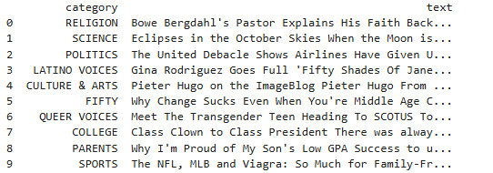
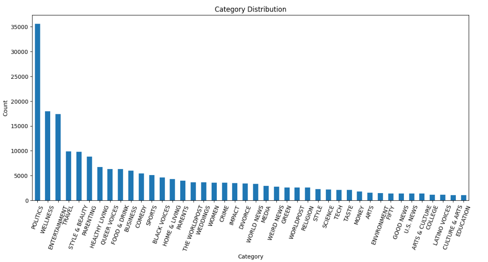
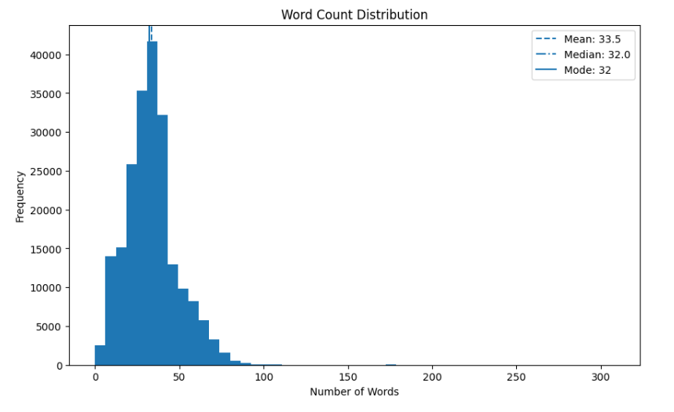
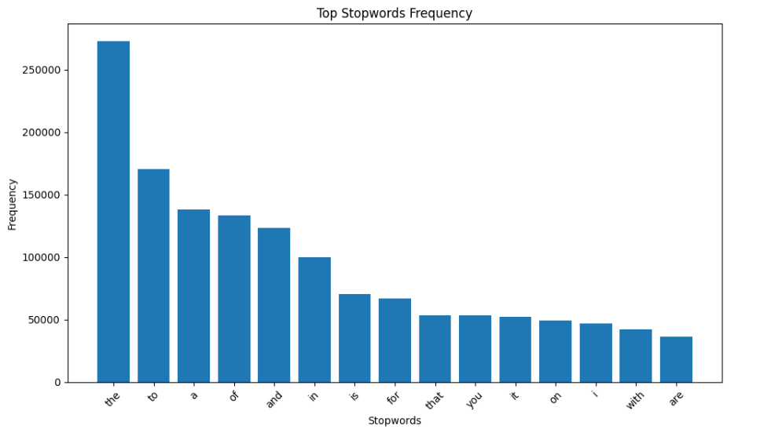
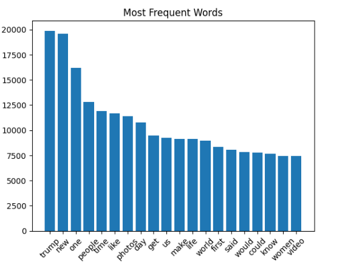
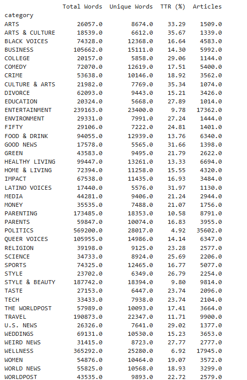
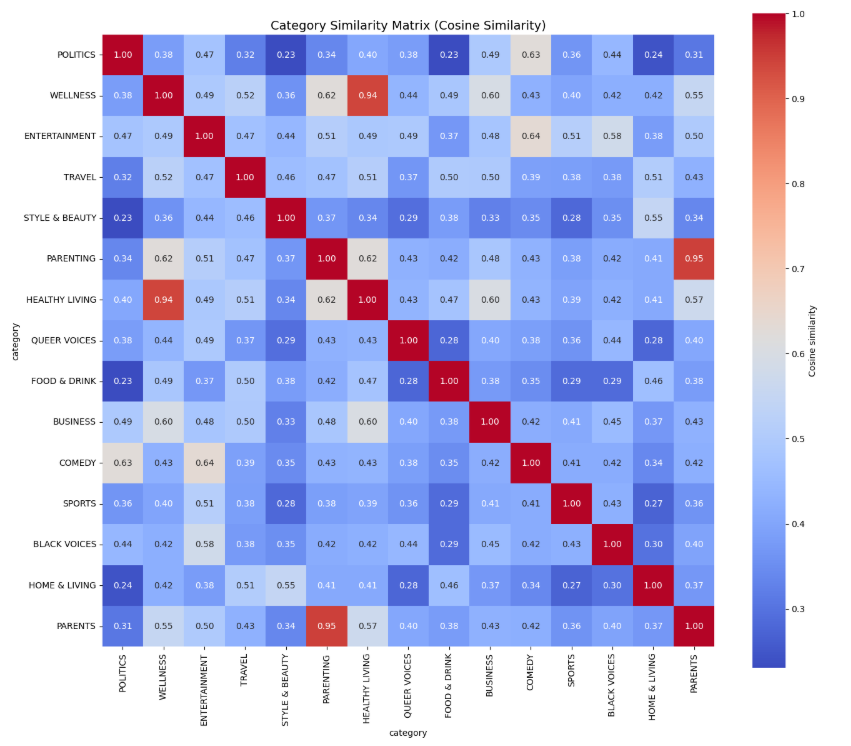
TF-IDF tops & N-grams
Most informative terms and frequent n-grams for representative categories.
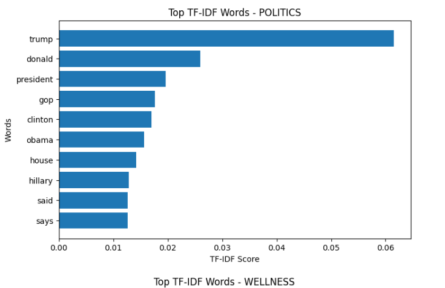
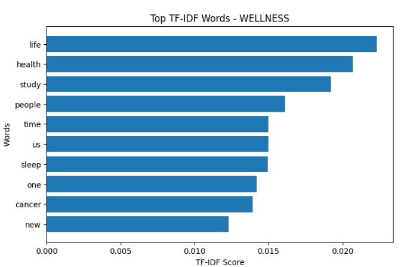
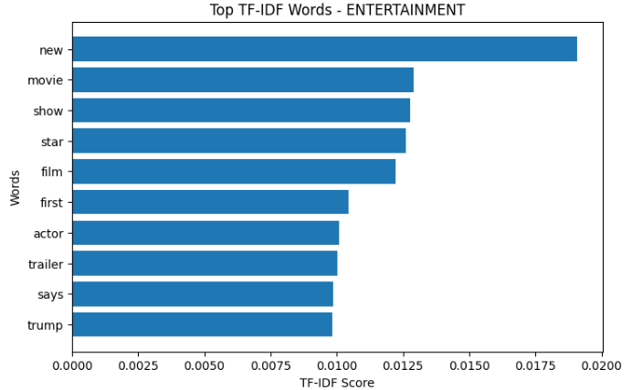
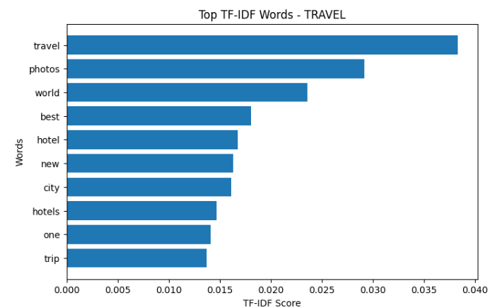
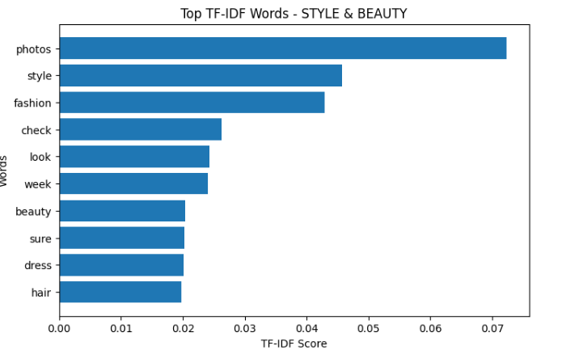
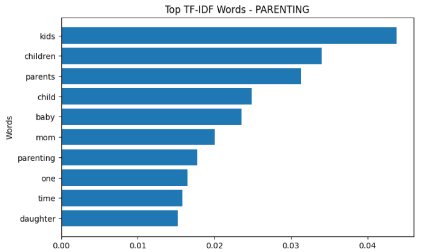
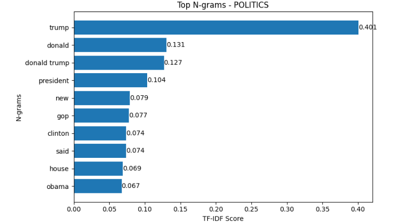
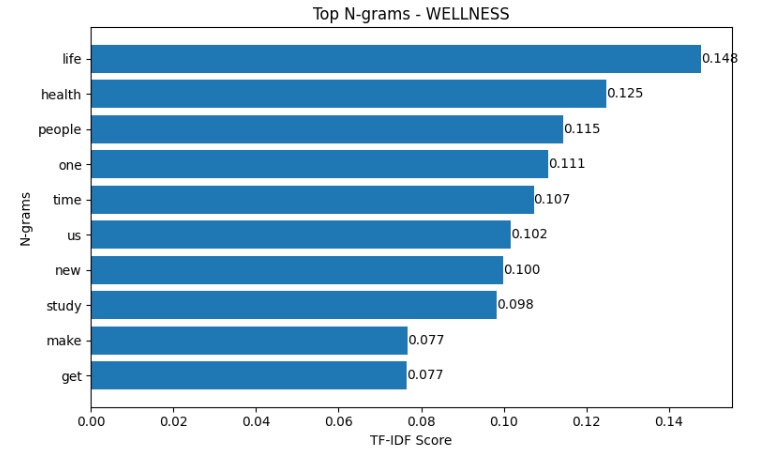
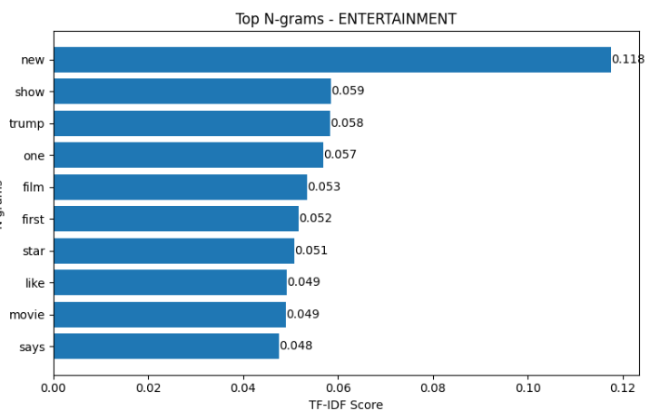
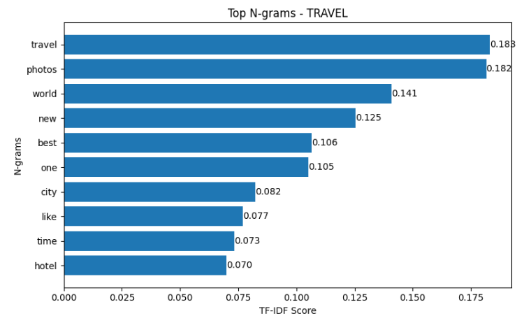
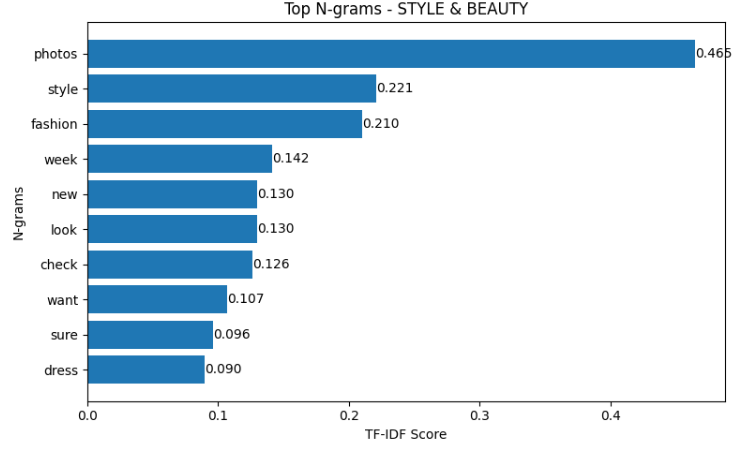
EDA observations
- Long-tail imbalance requires macro-F1 reporting and possibly class-weighted losses.
- Texts are short, so truncation at 60 tokens retains almost all content.
- High stopword ratio suggests using subword tokenizers and IDF weighting for lexical features.
- Overlap between lifestyle/parenting/health labels hints at confusable classes; careful validation and similarity-aware evaluation needed.